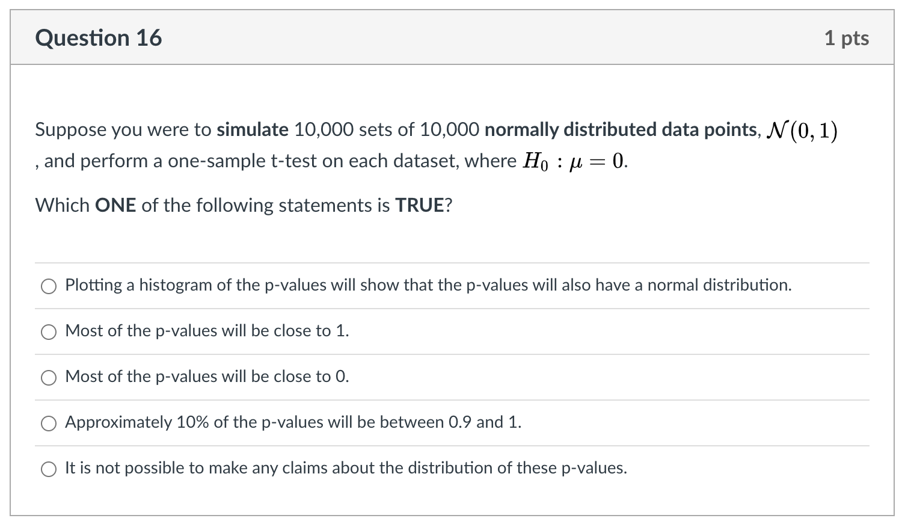

6 Portfolio
| Information | Note |
|---|---|
| Name | Portfolio |
| Type (Main, Mini or Basket) | Main |
| Value | 20% (Path A) 25% (Path B) |
| Due | Thursday, February 17, 2022 at 3:03 p.m. ET |
| Submission instruction | Submission: Via Markus |
| Accommodations and extension policy | In the case of a personal illness/emergency, a declaration can be made, but must be submitted no more than 3 days after the due date. Extensions may be requested through the same form up to 48 hours before the due date. |
Portfolio assessments aim to help you demonstrate your technical coding, statistical thinking, communication and reflection skills. This portfolio also aims to recap and refresh knowledge from your previous statistics courses as well as building your ability to create quality data visualizations.
6.1 General instructions
Be very careful to follow instructions on variable naming. If you do not, your code won’t pass auto-grading and you will not receive the grades. This will not be eligible for regrading requests.
Comment your code! In an R code chunk comments start with a # (pound sign or hashtag symbol). Don’t confuse this with the use of # to denote different levels of headings in the text parts (governed by Markdown syntax) of an R Markdown document.
All figures and tables should have appropriate (and appropriately positioned) captions.
You should neatly format your code. No strict style is required, but make sure it is easy to read your work. (Optional) You may find Google’s R Style Guide or the Tidyverse Style Guide interesting.
Include your code in the body of the PDF itself (don’t set echo=FALSE, don’t hide/suppress etc.). Note that this is different to what you will be asked to do in the final project or in professional reporting. This is a demonstration of your skills.
If asked to write and answer in words, write in full sentences.
KNIT EARLY AND OFTEN! Don’t leave things till the last minute, your Rmd not knitting is not an emergency for which an extension will be granted.
6.1.1 Template
You can access the template for this assessment here.
There is currently a lot of ‘filler text’ and ‘filler code’ in the template that you will want to delete. Fun fact: All filler text sourced from Hipster Ipsum, which Katy Wang in the UG Stats office introduced me to.
6.2 Submission instructions
- Submit both your Rmd (must be called: sta303-w22-portfolio.Rmd) and PDF (must be called: sta303-w22-portfolio.pdf) on MarkUs.
- You do not need to submit any data or tex files.
- The PDF must be knit directly from the Rmd (not Word or HTML first).
6.3 Cover page
You don’t have to use the provided template, but you DO need to write your portfolio in RMarkdown and include a standalone cover page. The cover page must have:
A title and subtitle (you can use my examples in the template or update them as you see fit, no points for changing, but it might make it a better part of your own website or GitHub portfolio, in the future)
Your name
Date (assessment submission date is fine)
It should not have your table of contents or any analyses on it.
In the template, you can change the colour of this cover to any colour you would like by replacing 6C3082 in the YAML (line 13) to another hex code. You could use this tool to help you: https://htmlcolorcodes.com/color-picker/
6.4 Introduction
Write this section last or second to last (before the refection).
In the introduction section, write a brief summary of the skills you have demonstrated in this portfolio, across the statistical skills sample, writing sample and reflection sections. Think of it like a cover letter for this document. It should be appropriate for a fairly general audience—imagine a future employer reading this. You may want to briefly explain the course context, as you understand it. What is STA303/1002 about? (Consider the learning objectives in the syllabus)
Your introduction should be no longer than 300 words and must fit on one page. If you did the mini-portfolio, you may reuse your own phrasing from that introduction (e.g., in introducing the course context), but this is also an opportunity to improve upon it.
6.5 Statistical skills sample
6.5.1 A note on time management.
Tasks 3 and 5 are essentially revision tasks for previous courses as I saw that there were still quite a few misunderstandings about these core concepts. If you find yourself unable to completely finish this portfolio, focusing your attention on the new material in Task 2 is a good strategy.
I have tried to make the revision a useful practice opportunity for other skills. You’ll see that Task 3 asks you to build a function. You may not have seen this in other classes before, but use the templates provided to help you. I expect your focus to be on modifying these templates to display appropriate text, I don’t expect you to be an expert on error handling in R functions.
6.5.2 Task 1: Setting up libraries and seed value
Set up a chunk called
setup_portfoliowhere you load thetidyverselibrary.Set your chunk options to
message=FALSEso all the package loading information isn’t included in your our output. You will need to make sure you run this chunk each time you start a new session so you can use many of the functions required.Create an object called
last3digplusthat takes the value 100 + the last three digits of your student ID number.Delete any placeholder library chunks in the template (if using).
6.5.3 Task 2a: Return to Statdew Valley: exploring sources of variance in a balanced experimental design (teaching and learning world)
In a class interactive, we explored some tomato and honey data in a statistical farming simulator.
Suppose you also have some data about strawberry yields (in kgs) across 18 different strawberry patches on your farm. There had been a problem with birds eating more than their fair share of your grandmother’s strawberries (there wouldn’t be enough for her famous jam!) so she had tried out three ‘treatment’ types: a scarecrow, covering the strawberries with netting and doing nothing (as a control).
Each patch was harvested 6 times, twice under each treatment. Your grandmother says weather and soil conditions were remarkably consistent across the entire time.
6.5.3.1 Growing your (grandmother’s) strawberry patch
# Don't edit this file
# Sourcing it makes a function available
# You CAN edit these comments
# Load grow_my_strawberries() function
source("grow_my_strawberries.R")- Run the function
grow_my_strawberries()(the chunk to source the function must be run first for this to work) withseed = last3digplusas the input, saving the output as the objectmy_patch. - Alter the
my_patchdata so thattreatmentis a factor variable with the levels ordered as follows: “No netting,” “Netting,” “Scarecrow.”
6.5.3.2 Plotting the strawberry patch
Create a plot, using ggplot2, where the x-xis has each plot (alphabetical) and the y-axis represents yield.
- Just for fun, make each point an upside-down triangle (strawberry-shaped).
- Within
geom_point(), setpch = 25.
- Within
- Colour the points with the following colours:
- No netting (#78BC61), Netting (#E03400), Scarecrow (#520048).
- You will need to point both
fillandcolorto the appropriate variable in your aesthetic mapping and usescale_fill_manualandscale_color_manualto set the colours.
- No netting (#78BC61), Netting (#E03400), Scarecrow (#520048).
- Apply
theme_minimal()to the plot - Add a caption “Created by YOUR NAME in STA303/1002, Winter 2022,” with your name included
- Add an appropriate figure caption
Figure 6.1: Target figure for task 2a (your patch data will be different, though!)
6.5.3.3 Demonstrating calculation of sources of variance in a least-squares modelling context
6.5.3.3.1 Model formula
Write out the model formulation for the model that fits a fixed effect for treatment, a random effect for patch, and a random effect for the interaction of treatment and patch.
Make sure you also EXPLAIN each term. All random effects should have a statement of their distribution.
While there are multiple ways to write out this model, I strongly suggest you mimic the structure written out for the honey model in the Statdew Valley interactive.
Create a table with the following columns:
Source of variation, the name for this source of variationVariance, the values you’ve calculated (var_patch,var_int,var_ab),Proportion, which is the proportion of variance in yield (not explained by treatment) explained by this source (round to 2 decimal places). Usekableto display the table nicely and add an appropriate caption.
6.5.3.3.2 Objects to create (proof-read carefully for autograding)
6.5.3.3.2.1 Tibbles
my_patch, your ‘patch’ of strawberries, grown based on using yourlast3digplusas the seed (created in the first part of the task).agg_patch, starting withmy_patch, group bypatchand then summarize to create a new variable,yield_avg_patch.agg_int, starting withmy_patch, group by bothpatchandtreatmentand then summarize to create a new variable,yield_avg_intthat is the average strawberry yield for eachpatchandtreatmentcombination.
6.5.3.3.2.2 Models
int_mod, an interaction model including main effects.yieldis the response andpatchandtreatmentshould be the predictors.patch_mod, an intercept only model, whereyield_avg_patchis the response. Use appropriate data aggregated to find the average yield per patch.agg_mod, a main effects model whereyield_avg_intis the response andpatchandtreatmentare the predictors. Use appropriate data aggregated across bothpatchandtreatment.
6.5.3.3.2.3 Numeric values
Note: These should not be hardcoded (i.e., not var_patch = 3), they should make use of your models.
var_patch, variance in average yield explained by patch-to-patch variance, after accounting for fixed effects and other sources.var_int, residual variance after fitting the version of this linear model with the most parametersvar_ab, variance in yield explained by the interaction between patch and treatment, after accounting for the fixed effects and other sources.
# Example tibble
tibble(`Source of variation` = c("Source 1",
"Source 2",
"Source 4"),
Variance = c("var_b", "var_ab", "var_int"),
Proportion = c(round(0.3333333, 2),
round(0.3333333, 2),
round(0.3333333,2) )) %>%
# It is okay if that caption goes off the page when knitting
knitr::kable(caption = "An example table, where you can replace the appropriate values, including removing the quote marks around the variance values and calculating the proportions values")| Source of variation | Variance | Proportion |
|---|---|---|
| Source 1 | var_b | 0.33 |
| Source 2 | var_ab | 0.33 |
| Source 4 | var_int | 0.33 |
6.5.4 Task 2b: Applying linear mixed models for the strawberry data (practical world)
- Fit 3 models (yield will be the response in all of them)
mod0, a linear model with onlytreatment,mod1, a linear mixed model withtreatmentandpatch(appropriate choices about what is a fixed vs random effect should be made)mod2, a linear mixed model withtreatment,patchand the interaction oftreatmentandpatch(appropriate choices about what is a fixed vs random effect should be made)
- Set up appropriate comparisons between these models, using a likelihood ratio test (
lmtest::lrtest)- Writing: make explicit comment on whether/where you are using REML / ML and WHY)
6.5.4.1 Justification and interpreation
- Chose which model, out of
mod0,mod1andmod2is the most appropriate final model (make it clear which one you are choosing and justify why).- Interpret the fixed effect coefficients.
- Discuss the proportion of variance, not explained by the fixed effects, that is explained by each source of variance in the model.
- Hint: If you have done both Task 2a correctly, it will match your variances from one of these model.
This should be at MAX 1-2 paragraphs.
6.5.5 Task 3a: Building a confidence interval interpreter
Write a function that helps you interpret a frequentist confidence interval with the appropriate language. Remember that we need to be careful about what our confidence level means and what value the interval is for.
Note: For this and the next task, you are largely replacing and reworking what I have set up. I am definitely not claiming these are excellently specified functions, there are lots of other improvement we might try to make if we were really adding a useful function to a package. For now, I just want you to get a bit of a sense of where the errors and warnings you see when using other functions come from. The main focus should be on practising a sensible template for how to interpret these values. Honestly, this is not a place where you need to be creative in your writing. It will speed up your writing and communication if you have a mental script for each time you have to interpret a p value or confidence interval.
6.5.5.1 Specifications:
- The function should be called
interpret_ci.
- It should take 4 arguments:
lower, the lower bound of the confidence interval (numeric)upper, the upper bound of the confidence interval (numeric)ci_level, the confidence level this interval was calculated at, e.g.99or95(numeric)stata description of the statistic of interest
- The output must be a full sentence that uses all 4 of the inputs to the function. It must be CLEAR what the confidence interval is making a claim about and the interpretation must be statistically appropriate.
- Warnings must be produced in the following cases:
- If
lowerorupperis not numeric. - If
ci_levelis not an numeric value between 0 and 100. - If
statisn’t a character string.
- If
- You must run (and include) the following code after setting up your function:
interpret_ci(10, 20, 99, "mean number of shoes owned by students")interpret_ci(10, 20, -1, "mean number of shoes owned by students")interpret_ci(10, 20, -1, tibble(stat = 3))- The results of the above must be printed out in the main text of the PDf (see examples in template)
interpret_ci <- function(lower, upper, ci_level, stat){
if(!is.character(stat)) {
# produce a warning if the statement of the parameter isn't a character string
# the spacing is a little weird looking so that it prints nicely in your pdf
warning("
Warning:
stat should be a character string that describes the statistics of
interest. The first part of this would be appropriate error text for this
issue. You can reuse it as in in your code (not plagairisim concern),
just make sure you delete this part.")
} else if(!is.numeric(lower)) {
# produce a warning if lower isn't numeric
warning("
Warning: NOPE! This error message should be improved.")
} else if(!is.numeric(upper)) {
# produce a warning if upper isn't numeric
warning("
Warning: NOPE! This error message should be improved.")
} else if(!is.numeric(ci_level) | ci_level < 0 | ci_level > 100) {
# produce a warning if ci_level isn't appropriate
warning("
Warning: Your ci_level is wrooooong.
This error message should be improved.")
} else{
# print interpretation
# this is the main skill I want to see, writing a good CI interpretation.
str_c("This is the confidence level: ", ci_level,
"%. And the text fed to stat is ", stat,
". There is also the lower and upper bounds: ", lower, " and ", upper,
". This part needs to be fixed!" )
}
}
# Test 1
ci_test1 <- interpret_ci(10, 20, 99, "mean number of shoes owned by students")
# Test 2
ci_test2 <- interpret_ci(10, 20, -1, "mean number of shoes owned by students")
# Test 3
ci_test3 <- interpret_ci(10, 20, -1, tibble(stat = 3))CI function test 1: This is the confidence level: 99%. And the text fed to stat is mean number of shoes owned by students. There is also the lower and upper bounds: 10 and 20. This part needs to be fixed!
CI function test 2: Warning: Your ci_level is wrooooong. This error message should be improved.
CI function test 3: Warning: stat should be a character string that describes the statistics of interest. The first part of this would be appropriate error text for this issue. You can reuse it as in in your code (not plagairisim concern), just make sure you delete this part.
6.5.6 Task 3b: Building a p value interpreter
Write a function that will interpret p values based on strength of evidence. Use this table to help you. You can decide how to set up the ‘greater than’ vs ’strictly greater than’s, etc. just be consistent (and make sure you understand why I’m a little fuzzy about the borders anyways.)
6.5.6.1 Here is an EXAMPLE. This is not the answer. I DO NOT want to see this submitted as an answer.
This would be an example of a p values interpreter that uses a 0.05 threshold to reject or fail to reject the null hypothesis.
# This is just an example! MODIFY THIS CODE
interpret_pval <- function(pval, nullhyp){
if(!is.character(nullhyp)) {
warning("
Warning: Excuse me, why isn't nullyhyp a character string?
This is not an appropriate error message, FYI.
Make yours more professional.")
} else if(!is.numeric(pval)) {
warning("You p value should be a number.")
} else if(pval > 1) {
warning("
Warning: What do you mean, a p value greater than 1?!?!
No way.
This is also not an appropriately professional error message.")
} else if(pval < 0){
warning("
Warning: Negative? I don't think so!
This is also not an appropriately professional error message.")
} else if(pval > 0.05){
str_c("The p value is ", round(pval, 5),
", we fail to reject the hyothesis that ", nullhyp)
} else if(pval <= 0.05){
str_c("The p value is ", round(pval, 5),
", we reject the hypothesis that ", nullhyp, ".")
}
}
pval_test1 <- interpret_pval(0.0000000003,
"the mean grade for statistics students is the same as for non-stats students")
pval_test2 <- interpret_pval(0.0499999,
"the mean grade for statistics students is the same as for non-stats students")
pval_test3 <- interpret_pval(0.050001,
"the mean grade for statistics students is the same as for non-stats students")
pval_test4 <- interpret_pval("0.05", 7)p value function test 1: The p value is 0, we reject the hypothesis that the mean grade for statistics students is the same as for non-stats students.
p value function test 2: The p value is 0.05, we reject the hypothesis that the mean grade for statistics students is the same as for non-stats students.
p value function test 3: The p value is 0.05, we fail to reject the hyothesis that the mean grade for statistics students is the same as for non-stats students
p value function test 4: Warning: Excuse me, why isn’t nullyhyp a character string? This is not an appropriate error message, FYI. Make yours more professional.
- Specifications for your function:
- Your function must be called
interpret_pval. - It must take two arguments:
pvalandnullhyp. - There must be an warning produced, with an appropriately informative (and professional!) error message, for values that p values cannot take AND non-character string null hypotheses. Use the template above and improve the text as well as adding new
else ifs to the chain. - The interpretation messages must be statistically appropriate and should not talk about rejecting or failing to reject the null. Instead the strength of evidence should be discussed appropriately.
- The output should be:
- a full sentence,
- that included the p value, rounded to 3 decimal places or replaced with “<.001” if less than 0.001 (based on APA guidelines for reporting statistics), and
- incorporate the text of the null hypothesis.
- Your function must be called
6.5.7 Task 3c: User instructions and disclaimer
Neither of these sections should be very long (1 to 3 paragraphs maximum). Please write in full sentences.
6.5.7.1 Instructions
Write brief instructions for how to use your two interpreters to someone who is new to statistics, but has been told they need to apply some basic statistical methods in their summer research project.
This should touch on what a null hypothesis is and what a population parameter is, and should give some examples and tips on wording a null hypothesis appropriately. It should also mention some common pitfalls in interpreting frequentist confidence intervals.
6.5.7.2 Disclaimer
Write a disclaimer/warning for your p value interpreter, specifically. What should people know and be cautious of before using it? Note: This should not be “be careful, I might have messed up my code,” this should be based on what guidance someone should be aware of if they were going to use this interpreter to interpret the results of a independent samples t-test, for example.
6.5.8 Task 4: Creating a reproducible example (reprex)
In Module 1, we discussed creating reproducible examples in R.
Suppose you had written the below code. You want to summarize the dataset my_data into a new dataset called my_summary and find the mean value for each group, and just have one row per group, but for some reason it is not working.
Note: DO NOT FIX THIS CODE. That is not the point of this activity.
Goal: Create a reproducible example that would allow someone ELSE to understand the code and situation.
In your submission there should be two things:
- A brief description IN YOUR OWN WORDS of what a reprex is and what you needed to consider to produce the reprex.
- The reprex output that would allow someone to completely reproduce your problem exactly. Think carefully about what you would need to provide. I.e., what you might post on a help-board as part of a request for help. You do NOT need to write up the rest of the description.
Hint: The workflow will be something like (1) create the code chunk for the reprex, (2) copy the code chunk to clipboard (Ctrl+C or Cmd+C), (3) run reprex::reprex() in the console, (4) paste output into your template (it won’t be a runable code chunk, you should be able to just paste as is and not edit it at all). Delete the original chunk (i.e., there should be now code run in this section of your report when you knit it.)
my_data <- tibble(group = rep(1:10, each=10),
value = c(16, 18, 19, 15, 15, 23, 16, 8, 18, 18, 16, 17, 17,
16, 37, 23, 22, 13, 8, 35, 20, 19, 21, 18, 18, 18,
17, 14, 18, 22, 15, 27, 20, 15, 12, 18, 15, 24, 18,
21, 28, 22, 15, 18, 21, 18, 24, 21, 12, 20, 15, 21,
33, 15, 15, 22, 23, 27, 20, 23, 14, 20, 21, 19, 20,
18, 16, 8, 7, 23, 24, 30, 19, 21, 25, 15, 22, 12,
18, 18, 24, 23, 32, 22, 11, 24, 11, 23, 22, 26, 5,
16, 23, 26, 20, 25, 34, 27, 22, 28))
my_summary <- my_data %>%
summarize(group_by = group, mean_val = mean(value))
glimpse(my_summary)## Rows: 100
## Columns: 2
## $ group_by <int> 1, 1, 1, 1, 1, 1, 1, 1, 1, 1, 2, 2, 2, 2, 2, 2, 2, 2, 2, 2, 3…
## $ mean_val <dbl> 19.67, 19.67, 19.67, 19.67, 19.67, 19.67, 19.67, 19.67, 19.67…6.5.9 Task 5: Simulating p values
6.5.9.1 Setting up simulated data
This revision task is meant to connect to Question 16 of your pre-knowledge quiz and help you visualize the behaviour of_p_ values.
- Set your seed to
last3digplus(that you set up in Task 1) - Create 3 simulated data sets (
sim1tosim3) of length 100000 and with two columns:groupandval.- Use
tibbleto create each dataset. - For each dataset, set
group = rep(1:1000, each = 100) - For
sim1set val to be 100000 values drawn from \(N(0, 1)\) (see functionrnorm()`). - For
sim2set val to be 100000 values drawn from \(N(0.2, 1)\).
- For
sim3set val to be 100000 values drawn from \(N(1, 1)\).
- Use
- Stack all 4 datasets into one new dataset called
all_sim, with an new column at the beginning calledsimthat takes the value 1 if the observation is fromsim1, 2 fromsim2, and so on.- This is most of the code you will need
bind_rows(sim1, sim2, sim3, .id = "sim")
- This is most of the code you will need
- Make any alterations necessary to
all_simso that you can join on the datasetsim_descriptionto provided better labels for each simulation (but without including any irrelevant labels).- You will need to include the code below to create this dataset.
- Plot histograms for the first three groups for each simulated dataset in one plot. Your final plot should use
ggplotandfacet_wrap. There should be three rows and three columns. The facets should be labelled withdesc(the more informative description than just 1, 2, 3).- Provide an appropriate figure caption, set with your chunk options.
- Add a within-image caption: “Created by YOUR NAME in STA303/1002, Winter 2022,” with your name included
- Apply
theme_minimal().
# Create sim_description
# Dataset to merge with improved simulation names
sim_description <- tibble(sim = 1:4,
desc = c("N(0, 1)",
"N(0.2, 1)",
"N(1, 1)",
"Pois(5)"))all_sim %>%
filter(group <= 3) %>%
ggplot(aes(x = val)) +
geom_histogram(bins = 40) +
facet_wrap(desc~group, nrow = 3) +
theme_minimal() +
labs(caption = "Created by YOUR NAME in STA303/1002, Winter 2022")Figure 6.2: Target first visualisation for task 5
6.5.9.2 Calculating p values
Create a new dataset called
pvalsthat starts withall_sim, groups by bothdescANDgroup, and then summarizes to find the p value for each group, based on a one sample, 2-sided t.test, where the null hypothesis is the the population mean is 0.t.test(val, mu = 0)$p.valuewill pull out the p value as a value for you (when included within the appropriate code).
.groups = "drop"may be useful to add to your summarize statement if you are getting a message about groups.Plot histograms of the p values, faceted by
desc. I would recommend addingscales = "free_y"to yourfacet_wrap()call as well (not assessed: can you figure out what it does?)- Use these statements appropriately in in your code to make the figure:
geom_histogram(boundary = 0, binwidth = 0.05, fill = "grey", color = "black")xlim(0,1)
- Provide an appropriate figure caption, set with your chunk options.
- Add a within-image caption: “Created by YOUR NAME in STA303/1002, Winter 2022,” with your name included
- Use these statements appropriately in in your code to make the figure:
Apply
theme_minimal().
Figure 6.3: Target second visualisation for task 5
6.5.9.3 Q-Q plots
- Create one final plot that creates a 3x1 figure with Q-Q plots for each simulation. You must determine what the distribution of a p value should be, WHEN THE NULL HYPOTHESIS IS TRUE, and compare it it to the distributions of p values we have generated.
I have provided a template for the code, you just need to decide which quantile function to put where the XXXXXXX is now. (e.g., qpois is the quantile function for the Poisson distribution). Also adjust the caption with your authorship and add an appropriate figure caption.
pvals %>%
ggplot(aes(sample = pval)) +
geom_qq(distribution = XXXXXXX) +
geom_abline(intercept = 0, slope = 1) +
facet_wrap(~desc) +
theme_minimal() +
labs(caption = "Created by YOUR NAME in STA303/1002, Winter 2022")
Figure 6.4: Target final visualisation for task 5
6.5.9.4 Conclusion and summary
Remark briefly on:
- how what you have done in this task connects to the definition of a p value, and
- specifically how it connects to answering the below question from the pre-knowledge check.
(Note: so that you didn’t have to wait to long for your PDF to knit, I made the number of simulations and simulation size a little smaller, but the idea is the same.)

6.6 Writing sample
6.6.1 Prompt
Read Motulsky (2014), https://www.ncbi.nlm.nih.gov/pmc/articles/PMC4203998/pdf/210_2014_Article_1037.pdf, and paraphrase it with the goal of giving advice to your future self. I.e., YOU in the future is your audience, but keep the tone professional enough that you could share it as a LinkedIn post, or provide a copy to an acquaintance as advice. This shouldn’t be a summary of the full article. Instead, focus on what surprised you, what you didn’t know before, what you don’t want to forget. You can also disagree with the claims in the article if you see fit.
As your task is to explicitly comment on this article, you must reference the article! The in-text APA style reference for this article is: (Motulsky, 2014) with the below the full reference to include at the end:
Motulsky, H. J. (2014). Common misconceptions about data analysis and statistics. Naunyn-Schmiedeberg’s Archives of Pharmacology, 387(11), 1017–1023. https://doi.org/10.1007/s00210-014-1037-6
You might also incorporate it as “Motulsky (2014) states that…”. You don’t need the reference at the end of every sentence, but it should be clear to a reader what ideas have come from the article and what has come from you, throughout the piece.
You can use another referencing style if you wish, or you can just copy this (that is not an academic offence!).
Please be very mindful of proper paraphrasing! The main point of this activity is to put things in YOUR OWN WORDS. Read the provided advice in Module 2.
There should not be too many direct quotes from the article, and better if there are none at all. IMPORTANT NOTE: A zero grade on paraphrasing will result in a zero on the ENTIRE writing component of your portfolio.
Make sure your writing sample has an introduction and comes to a conclusion.
Word count: 300–500 words (not including reference at the end). Please add a statement of your word count at the end of the passage.
6.7 Reflection
Briefly, 100 to 200 words each, answer the following questions:
What is something specific I’m proud of in this portfolio?
How might I apply what I’ve learned and demonstrated in this portfolio in future work and study, after STA303/1002?
What is something I’d do differently next time?
6.8 Rubric
There is a breakdown of the overall contribution of each component to your grade below, followed by a more detailed rubric.
| Component | Percentage for component |
|---|---|
| Cover page | 1% |
| Introduction | 5% |
| Statistical skills sample | 60% |
| Commenting of code | 1% |
| Readability of R code | 1% |
| Reproducibility | 2% |
| Writing sample | 20% |
| Reflection | 5% |
| General (multiple components) | 5% |
Detailed rubric TBA.